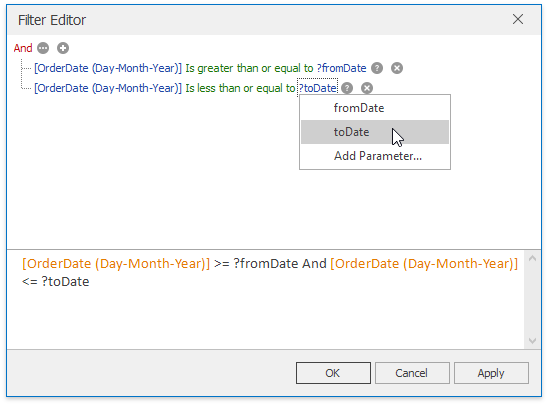

Passing Parameter Values
In this topic, you will learn how to pass parameter values to a dashboard.
SQL Queries
The Dashboard Designer provides the capability to use a dashboard parameter as an SQL query/stored procedure parameter. To pass a dashboard parameter to an SQL query/stored procedure in the Data Source wizard or Query Editor, do the following.
- Create a query parameter or select the required stored procedure parameter.
Enable the Expression checkbox for this parameter and select the required dashboard parameter in the Value column.

If necessary, you can select Expression editor... and specify an expression to bind a query parameter to a dashboard parameter using custom logic.
Filtering
You can filter the specified query of the SQL Data Source or apply filtering to a specific dashboard item according to the current parameter value(s) using the Filter Editor.
In the Filter Editor, you can compare a field value with the following objects.
- A static value (represented by the
 icon). Click this button to switch to the next item mode ("another field value"), to compare the field value with another field value.
icon). Click this button to switch to the next item mode ("another field value"), to compare the field value with another field value. - Another field value (represented by the
 icon). Click this button to switch to the next item mode (“parameter value”), to compare the field value with a parameter value.
icon). Click this button to switch to the next item mode (“parameter value”), to compare the field value with a parameter value. - A parameter value (represented by the
 icon). Click this button to switch back to the initial mode ("static value"), to compare the field value with a static value.
icon). Click this button to switch back to the initial mode ("static value"), to compare the field value with a static value.
Thus, to compare a field value with a parameter value, click the button, then click the button.

Conditional Formatting
You can apply conditional formatting to a specific dashboard item according to the current parameter value when creating the Expression format condition. In the Expression dialog, you can compare a field value with parameter values in the same manner as in the Filter Editor dialog.
Calculated Fields
You can use parameters when constructing expressions for calculated fields. This allows you to dynamically evaluate values of the calculated field depending on the current parameter value.
To include the required parameter in the calculated field expression, click Parameters in the Expression Editor dialog and double-click the required parameter.

Window Calculations
You can use parameters when customizing expressions for window calculations. This allows you to apply a calculation dynamically, depending on the current parameter value.